DevOps Open Agent — Architecture
Self-hostable platform: Next.js UI, FastAPI backend, four agent modules, shared AI layer, SQLite investigations, PostgreSQL auth, Docker Compose runtime.
System context

Browser and GitHub connect to Docker Compose services; backend reaches host mounts and external APIs.
Application layers

Frontend routes to FastAPI; four agent modules share AI and SQLite storage.
Downloadable files
PNG/SVG sources live in docs/diagrams/. Canvas source:
docs/devops-open-agent-architecture.canvas.tsx.
Full Mermaid definitions: docs/ARCHITECTURE.md.